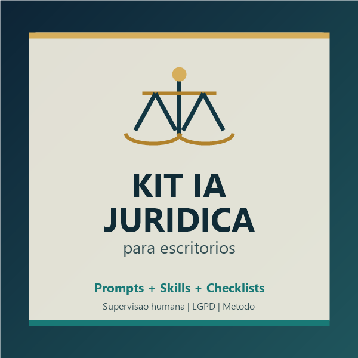

Triagem inicial
Perguntas estruturadas para entender contexto, documentos, prazos e pontos de atencao antes de qualquer analise.
IA para rotinas juridicas
Um pacote de prompts, Knowledge Skills e checklists para apoiar triagem, resumo de documentos, checklist contratual, pesquisa assistida, atendimento inicial e marketing juridico informativo.

O foco nao e automatizar decisao juridica. O foco e organizar tarefas repetitivas para que o profissional revise melhor, ganhe tempo e reduza improviso.
Perguntas estruturadas para entender contexto, documentos, prazos e pontos de atencao antes de qualquer analise.
Modelo para resumir contratos, peticoes, atas e documentos longos mantendo alertas de incerteza.
Roteiro para verificar partes, prazos, multas, responsabilidades, confidencialidade e pontos de risco.
Prompt para levantar hipoteses, termos de busca, fontes e pontos que exigem confirmacao humana.
Checklist para reduzir exposicao de dados pessoais e informacoes sensiveis ao usar ferramentas de IA.
Fluxo para fazer a IA separar fatos, suposicoes, lacunas e trechos que precisam ser conferidos.
Este produto e educacional e operacional. Ele nao substitui advogado, nao emite parecer juridico autonomo, nao garante resultado processual e nao dispensa revisao por profissional habilitado.
Feito para escritorios pequenos, advogados autonomos, equipes juridicas e estagiarios supervisionados que querem produtividade com criterio.
Nao. O kit organiza tarefas de apoio, como triagem, resumo, checklist e revisao. Decisoes juridicas continuam dependendo de profissional habilitado.
Nao e recomendado. O kit inclui orientacoes para reduzir dados sensiveis e lembrar da LGPD, sigilo e politicas da ferramenta usada.
Sim. O produto foi pensado para rotinas enxutas, onde ganhar tempo e manter padrao de revisao faz diferenca.